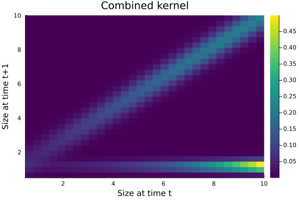

Kernel construction
VitalRateModels.vital_rates_to_kernel — Method
vital_rates_to_kernel(survival::FittedSurvival, growth::FittedGrowth,
domain::ContinuousDomain; predictor_name=:size_t)Construct a P-kernel (survival × growth) from fitted vital rates on a domain.
Returns a matrix of size (nmeshpoints × nmeshpoints).
VitalRateModels.vital_rates_to_kernel — Method
vital_rates_to_kernel(fecundity::FittedFecundity, recruitment::FittedRecruitment,
domain::ContinuousDomain; predictor_name=:size_t)Construct an F-kernel (fecundity × recruit size) from fitted vital rates.
VitalRateModels.vital_rates_to_matrix — Function
vital_rates_to_matrix(survival::FittedSurvival, stage_sizes::AbstractVector;
predictor_name=:size_t)Construct a diagonal stage-survival matrix from fitted survival probabilities at representative stage sizes.
vital_rates_to_matrix(survival::FittedSurvival, growth::FittedGrowth,
stage_sizes::AbstractVector; predictor_name=:size_t)Construct a square stage-transition matrix by combining fitted survival and stage-to-stage growth probabilities at representative stage sizes.
vital_rates_to_matrix(survival::FittedSurvival, growth::FittedGrowth,
fecundity::FittedFecundity, recruitment::FittedRecruitment,
stage_sizes::AbstractVector; predictor_name=:size_t)Construct a square stage-based projection matrix approximation $A = U + F$ from fitted survival, growth, fecundity, and recruitment vital rates.
using VitalRateModels, DataFrames, StatsModels, Distributions, Plots
using Random
using StructuredPopulationCore: ContinuousDomain, meshpoints
Random.seed!(2104)
n = 180
size_t = clamp.(rand(Normal(5.2, 1.1), n), 0.7, 10.0)
survived = rand.(Bernoulli.(1 ./(1 .+ exp.(-(-2.0 .+ 0.5 .* size_t))))) .== 1
size_t1 = clamp.(1.0 .+ 0.9 .* size_t .+ rand(Normal(0, 0.55), n), 0.0, 11.0)
fecundity = rand.(Poisson.(exp.(-3.0 .+ 0.3 .* size_t)))
recruit_size = clamp.(rand.(Normal.(1.1 .+ 0.02 .* size_t, 0.2)), 0.2, 2.5)
demo = DataFrame(
size_t=size_t,
size_t1=size_t1,
survived=survived,
fecundity=fecundity,
recruit_size=recruit_size,
)
survival_fit = fit_vital_rate(SurvivalModel, demo, @formula(survived ~ size_t))
growth_fit = fit_vital_rate(GrowthModel, demo, @formula(size_t1 ~ size_t))
fecundity_fit = fit_vital_rate(FecundityModel, demo, @formula(fecundity ~ size_t), distribution=Poisson_())
recruitment_fit = fit_vital_rate(RecruitmentModel, demo, @formula(recruit_size ~ size_t))
domain = ContinuousDomain(0.5, 10.0, 30)
mesh = meshpoints(domain)
P = vital_rates_to_kernel(survival_fit, growth_fit, domain)
F = vital_rates_to_kernel(fecundity_fit, recruitment_fit, domain)30×30 Matrix{Float64}:
0.00117634 0.00131579 0.00147176 … 0.0270878 0.0302988
0.0134727 0.0150697 0.0168561 0.310237 0.347012
0.0193969 0.0216963 0.0242681 0.446655 0.499601
0.0037143 0.0041546 0.00464708 0.0855296 0.0956682
7.74952e-5 8.66815e-5 9.69567e-5 0.00178449 0.00199602
1.45758e-7 1.63036e-7 1.82362e-7 … 3.35638e-6 3.75425e-6
2.24753e-11 2.51395e-11 2.81195e-11 5.1754e-10 5.7889e-10
2.7198e-16 3.0422e-16 3.40283e-16 6.26291e-15 7.00531e-15
2.52679e-22 2.82631e-22 3.16134e-22 5.81846e-21 6.50817e-21
1.78006e-29 1.99107e-29 2.22709e-29 4.09896e-28 4.58485e-28
⋮ ⋱
2.89095e-203 3.23365e-203 3.61696e-203 6.65703e-202 7.44615e-202
4.27566e-225 4.7825e-225 5.34941e-225 9.8456e-224 1.10127e-223
4.67211e-248 5.22594e-248 5.84542e-248 1.07585e-246 1.20338e-246
3.77113e-272 4.21816e-272 4.71818e-272 8.68382e-271 9.71319e-271
2.24799e-297 2.51447e-297 2.81253e-297 … 5.17646e-296 5.79008e-296
1.0e-323 1.0e-323 1.5e-323 2.27e-322 2.57e-322
0.0 0.0 0.0 0.0 0.0
0.0 0.0 0.0 0.0 0.0
0.0 0.0 0.0 0.0 0.0(size(P), size(F), size(P + F))((30, 30), (30, 30), (30, 30))stage_survival = vital_rates_to_matrix(survival_fit, [1.0, 3.0, 6.0, 9.0])
stage_survival4×4 Matrix{Union{Missing, Float64}}:
0.226032 0.0 0.0 0.0
0.0 0.41232 0.0 0.0
0.0 0.0 0.723186 0.0
0.0 0.0 0.0 0.906788p = heatmap(
mesh,
mesh,
P + F,
xlabel="Size at time t",
ylabel="Size at time t+1",
title="Combined kernel",
color=:viridis,
)
p